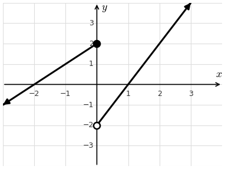
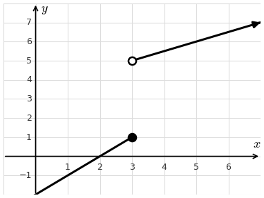
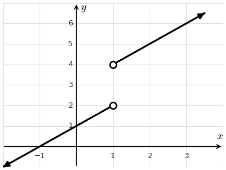
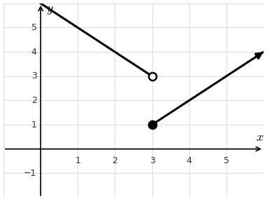
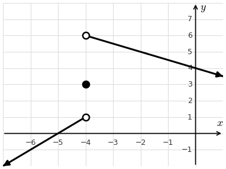

Lesson 2: Finding Limits Graphically
Graph the function below.
| \(x\) | \(f(x)\) |
|---|---|
| −2 | 0 |
| −1 | 1 |
| 0 | 2 |
| 0.01 | −1.98 |
| 0.5 | −1.0 |
| 1 | 0 |
| 2 | 2 |
Open and closed circles show the function value where the equation changes. The filled-in circle is the function value.

The left-hand and right-hand limits are different, so \(\displaystyle\lim_{x \to 0} f(x)\) does not exist.
The graph of a function \(f(x)\) is given. Use the graph to find each of the following.
The left-hand and right-hand limits are different, so \(\displaystyle\lim_{x \to 3} f(x)\) does not exist.

The graph of a function \(f(x)\) is given. Use the graph to find each of the following.
There is no filled-in dot above \(x = 1\), so \(f(1)\) is undefined.
The left-hand and right-hand limits are different, so \(\displaystyle\lim_{x \to 1} f(x)\) does not exist.

The graph of a function \(g(x)\) is given. Use the graph to find each of the following.
The left-hand and right-hand limits are different, so \(\displaystyle\lim_{x \to 3} g(x)\) does not exist.

The graph of a function \(g(x)\) is given. Use the graph to find each of the following.
The left-hand and right-hand limits are different, so \(\displaystyle\lim_{x \to -4} g(x)\) does not exist.
